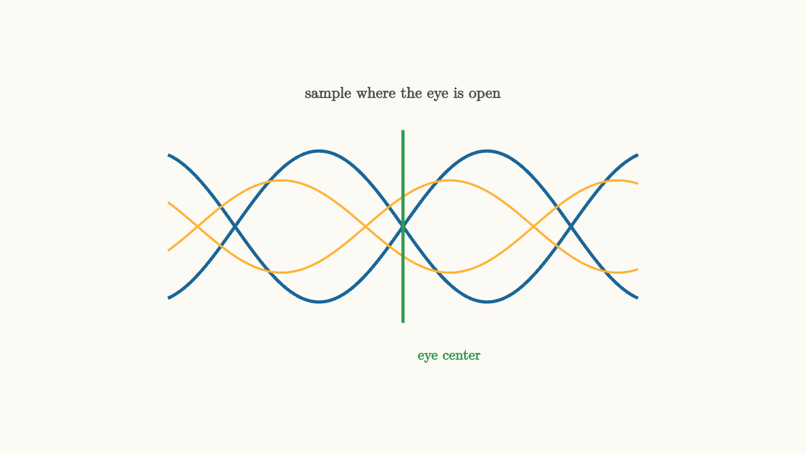

Symbol Timing Finds The Eye Center
After matched filtering, the receiver still has to choose when to sample. A pulse-shaped waveform contains good instants and bad instants. The good instants sit near the eye center.
An eye diagram overlays many symbol intervals on top of one another. Where the traces leave a wide opening, the receiver has room for noise and timing error. Where the traces cross, tiny timing mistakes can flip decisions.

source
background = [0.985, 0.98, 0.955, 1]
camera = Camera(4.8b)
mesh diagram = block {
. stroke{BLUE, 3} ExplicitFunc(|t| 0.9 * sin(1.57 * t), [-2.8, 2.8, 220])
. stroke{BLUE, 3} ExplicitFunc(|t| -0.9 * sin(1.57 * t), [-2.8, 2.8, 220])
. stroke{ORANGE, 2} ExplicitFunc(|t| 0.55 * sin(1.57 * t + 0.7), [-2.8, 2.8, 220])
. stroke{ORANGE, 2} ExplicitFunc(|t| -0.55 * sin(1.57 * t + 0.7), [-2.8, 2.8, 220])
. stroke{GREEN, 3} Line(start: [0, -1.15, 0], end: [0, 1.15, 0])
. center{[0, 1.58, 0]} color{DARK_GRAY} Text("sample where the eye is open", 0.66)
. center{[0.55, -1.55, 0]} color{GREEN} Text("eye center", 0.62)
}
"eye"
play Fade(0.6)Raised cosine shaping creates clean samples only at the intended symbol times. If the receiver samples early or late, neighboring pulse tails no longer vanish. The desired symbol shrinks, and intersymbol interference grows.
Symbol timing recovery estimates the sampling phase. It adjusts the receiver's sampling clock so decisions happen near the eye center.
Timing error has a direction
A timing recovery loop needs more than "the sample was bad." It needs to know whether the receiver sampled too early or too late.
Some systems use a training sequence. Since the receiver knows the transmitted symbols during training, it can compare expected and observed samples and adjust timing.
Other systems use timing error detectors that exploit waveform shape. A common idea is to look at samples around the decision instant. If the waveform is rising or falling in a particular way, the loop can infer whether the center lies slightly left or right.
source
param timing = -0.45
background = [0.985, 0.98, 0.955, 1]
camera = Camera(4.8b)
let Eye = |timing, col| block {
. stroke{BLUE, 3} ExplicitFunc(|t| 0.85 * sin(1.57 * t), [-2.8, 2.8, 220])
. stroke{BLUE, 3} ExplicitFunc(|t| -0.85 * sin(1.57 * t), [-2.8, 2.8, 220])
. stroke{LIGHT_GRAY, 2} Line(start: [0, -1.15, 0], end: [0, 1.15, 0])
. stroke{col, 4} Line(start: [timing, -1.15, 0], end: [timing, 1.15, 0])
. fill{WHITE} stroke{col, 2} center{[timing, 0.85 * sin(1.57 * timing), 0]} Circle(0.1)
. fill{WHITE} stroke{col, 2} center{[timing, -0.85 * sin(1.57 * timing), 0]} Circle(0.1)
}
"early"
mesh title = center{[0, 1.58, 0]} color{DARK_GRAY} Text("timing recovery moves the sample line", 0.62)
mesh eye = Eye(timing: $timing, col: ORANGE)
mesh label = center{[0, -1.55, 0]} color{DARK_GRAY} Text("early samples sit near a crossing", 0.62)
play Write(0.8)
play Fade(0.6)
"center"
timing = 0.0
eye = Eye(timing: $timing, col: GREEN)
label = center{[0, -1.55, 0]} color{DARK_GRAY} Text("the center gives maximum margin", 0.62)
play Lerp(1.2)
"late"
timing = 0.42
eye = Eye(timing: $timing, col: RED)
label = center{[0, -1.55, 0]} color{RED} Text("late samples lose margin again", 0.62)
play Lerp(1.0)The slider moves the sampling line. Near the center, both upper and lower traces are far from the decision threshold. Near a crossing, the same noise can cause a symbol error.
Timing recovery is a loop
A timing recovery system usually has these pieces:
1. a timing error detector 2. a loop filter that smooths the error 3. a clock or interpolator that moves sample times
Modern digital receivers often sample faster than the symbol rate, then use interpolation to estimate the value at the desired fractional time. The loop updates that fractional time as the transmitter and receiver clocks drift.
Clock drift is inevitable. Two crystal oscillators marked with the same frequency still differ slightly. Temperature and motion can change the received waveform. Timing recovery is therefore continuous, not a one-time setup.
The eye tells several stories at once
A clean eye has a wide vertical opening and a wide horizontal opening. Vertical opening means noise margin. Horizontal opening means timing margin.
A closed eye can come from many causes: too little bandwidth, too much channel distortion, poor pulse shaping, timing jitter, or low signal-to-noise ratio. The eye diagram is popular because it combines these effects into one picture.
Symbol timing is the receiver's act of choosing the best moment. Once the timing is right, the matched filter samples become reliable evidence for the symbols. For passband QAM, another alignment remains: the constellation may still be rotating because the carrier phase is wrong.